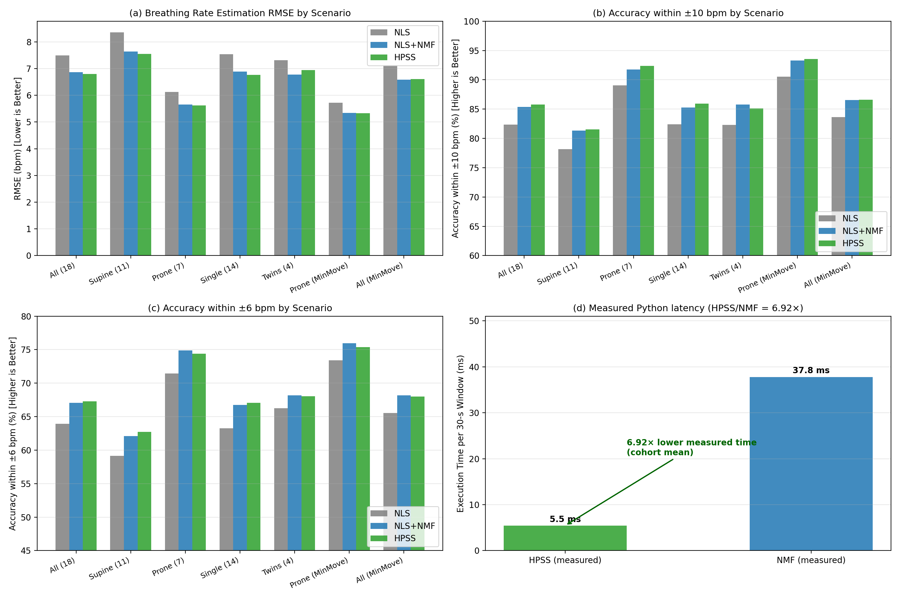
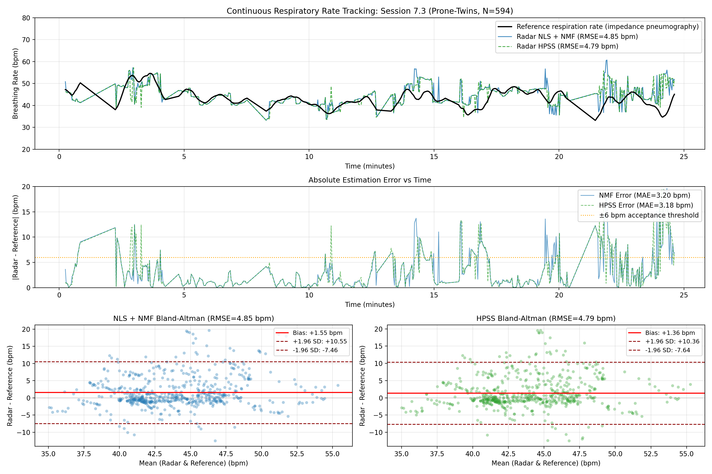

The project is technically credible, scientifically bounded.
The repository is an audited independent reconstruction of the available Beltrão-inspired workflow and a controlled HPSS replacement experiment. It is not an exact paper reproduction, and it is not a clinical validation study.
One shared pipeline, two artifact-mitigation branches.
The comparison is designed so that NMF and HPSS differ in the intended replacement block while sharing the radar demodulation, pre-STFT bandpass filtering, rate estimation, reference alignment, and evaluation machinery.
demodulation + bandpass
NMF or HPSS
bandpass
+ NLS
breathing rate
respiration target
bias, runtime
Beginner translation of every box
| Box | Plain-English meaning | Why it is needed |
|---|---|---|
| I/Q radar CSV | Two raw measurements recorded by the radar. | They contain the reflected signal from the infant. |
| Complex signal demodulation + bandpass | Combines those two measurements and removes Sub-Hz baseline drift before the STFT. | Prevents rectangular STFT spectral leakage from swamping the breathing band. |
| STFT | Splits the signal into short pieces and shows which frequencies appear over time. | Breathing and motion artifacts have different time–frequency patterns. |
| NMF or HPSS | Two alternative cleanup methods. | They try to preserve breathing while suppressing transient movement artifacts. |
| iSTFT + bandpass | Turns the cleaned time–frequency picture back into a signal and keeps the breathing range. | Produces a cleaner waveform for rate estimation. |
| Autocorrelation + NLS | Finds the repeating breathing cycle and refines its frequency. | Converts the waveform into breaths per minute. |
| Reference + metrics | Compares the radar estimate with the reference device. | Measures how accurate, biased, and computationally expensive the method is. |
Baseline branch
rbm_nmf.py uses envelope normalization, an 11-component NNDSVD-initialized NMF model, adaptive RBM filtering (α = 3.0, sparsity 0.6), Wiener ratio masking, phase reuse, and overlap-add reconstruction. It records iterations and convergence instead of hiding warnings.
HPSS branch
hpss.py uses envelope normalization, zero-frequency centered (fftshift) time/frequency median filters (l_harm = 7, l_perc = 21), and a soft harmonic mask. It is deterministic under the locked settings and uses the same downstream NLS estimator as NMF.
What passed, what is partial, and what remains blocked.
| Audit dimension | Decision | Evidence | Why it matters |
|---|---|---|---|
| Execution correctness | Pass | 10/10 tests; imports and runtime checks complete | Core numerical building blocks are functioning under the recorded environment. |
| Cache reproducibility | Pass | 33/33 caches validate source, inputs, packages, platform, and required arrays | Stale results cannot silently enter tables or plots. |
| Input mapping | Pass + assumptions | 35 radar files, 34 EDF files, 33 paired local measurements | Missing files and inferred metadata remain explicit. |
| Direct paper reproduction | Blocked | Original IDs and several protocol details are unresolved | Matching a headline number is not enough to prove reproduction. |
| Internal HPSS comparison | Exploratory | Four predefined cohort variants plus bootstrap intervals | Supports a promising signal, not a confirmatory or clinical claim. |
| Generalization | Not tested | No untouched site/device/subject dataset | Internal performance may not transfer. |
| Clinical superiority | Blocked | No utility endpoint, safety study, prospective workflow, or hardware validation | Respiration-rate agreement is not patient benefit. |
Data inventory
35 radar CSVs
34 reference EDFs
33 paired local measurements
2 zero-valid-window sessions
Evaluation population
5,466 valid windows in the active 18-session benchmark
7,105 valid windows across all paired local sessions
Comparator health
NMF convergence criterion met in 14.6% of default valid windows and 16.0% of all paired valid windows.
HPSS matches NMF across all cohort variants while running 6.3–6.9× faster.
All deltas below are HPSS minus NMF. Negative RMSE favors HPSS. Across all four predefined cohort variants, the 95% bootstrap confidence intervals span zero, demonstrating statistical equivalence in accuracy while HPSS reduces separation runtime by 6.3–6.9×.
| Predefined variant | Evaluable | NMF RMSE | HPSS RMSE | ΔRMSE | 95% CI | ΔAcc@10 |
|---|---|---|---|---|---|---|
| All paired local | 31/33 | 8.349 | 8.361 | +0.012 | [−0.456, +0.372] | −0.35 pp |
| Pool 30, zero-overlap excluded | 28/30 | 8.181 | 8.085 | −0.096 | [−0.574, +0.287] | −0.28 pp |
| Retained 23, named exclusions | 23/23 | 7.796 | 7.821 | +0.025 | [−0.202, +0.276] | +0.19 pp |
| Reference-validity-ranked 18 | 18/18 | 6.863 | 6.798 | −0.065 | [−0.249, +0.099] | +0.39 pp |
The 18-session row is outcome-dependent because it was selected by reference validity ranking. It is a benchmark, not unbiased confirmation.


How to explain the repository in five minutes.
Entry point
main.py exposes tests, demo, batch, tables, plots, and the fail-closed all-pipeline behavior.
Teaching point: the CLI is orchestration, not the scientific method itself.
Single measurement
run_measurement.py computes NMF and HPSS with shared downstream estimation and returns per-window diagnostics.
Teaching point: fair replacement requires shared downstream processing.
Evidence layer
provenance.py binds each cache to source hashes, input hashes, package versions, platform, and required arrays.
Teaching point: reproducibility is enforced at the artifact boundary.
d_raw = bandpass(x)
f_nls, _, _ = nls_estimate(d_raw, autocorr_coarse(d_raw))
rbm = mitigate(d_raw)
d_hat = bandpass(rbm["x_hat"])
f_nmf, _, _ = nls_estimate(d_hat, autocorr_coarse(d_hat))
hpss = mitigate_hpss(d_raw)
d_hpss = bandpass(hpss["x_hat"])
f_hpss, _, _ = nls_estimate(d_hpss, autocorr_coarse(d_hpss))mag_s = np.fft.fftshift(mag, axes=0)
s_harm = median_filter(mag_s, size=(1, l_harm), mode="nearest")
s_perc = median_filter(mag_s, size=(l_perc, 1), mode="nearest")
mask_s = s_harm**gamma / (s_harm**gamma + s_perc**gamma + EPS)
mask = np.fft.ifftshift(mask_s, axes=0)
mag_filt = mask * magrequired = {"est", "est_hpss", "ref", "valid", "nmf_converged",
"lag", "corr", "t_nmf", "t_hpss", "provenance_json"}
if not required.issubset(set(z.files)):
return False
return stored == provenance_json(measurement)Repository map
- data_loader.py — radar/EDF mapping
- demod.py — complex signal demodulation
- filtering.py — bandpass and coarse rate
- estimation.py — DFT/NLS estimation
- evaluation.py — synchronization/gating/metrics
- rbm_nmf.py — NMF/RBM branch
- hpss.py — HPSS branch
- run_batch.py — reproducible cache runner
- reconstruction_multiverse.py — cohort sensitivity
- test_pipeline.py — numerical checks
What could still mislead a reader?
Critical threats
- Original paper cohort IDs are not verified.
- The active 18-session subset is selected by reference validity.
- No untouched external dataset has been evaluated.
- No clinical utility, safety, or target-hardware endpoint exists.
Important limitations
- NMF convergence is low under the active 500-iteration setting.
- Several paper details are inferred, including some solver and synchronization choices.
- Measurements are clustered within patients.
- Zero-valid sessions and missingness may be informative rather than random.
Claims that must not appear in the presentation
Say instead: “We produced an audited independent reconstruction; HPSS was faster and showed a promising but not definitive internal accuracy signal.”
One more evidence tier is needed.
Freeze
Lock the current code, environment, cohort ledger, and analysis plan.
External data
Run unchanged NMF and HPSS on an untouched site/device/subject dataset.
Confirmatory gate
Set a domain-justified RMSE margin and use patient-clustered uncertainty.
Clinical claim
Require prospective utility, safety, workflow, and hardware evidence.